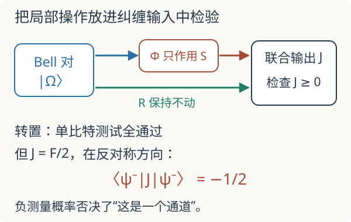

本页目录
基础衔接 05 · Kraus 与 Choi：噪声模型怎样通过纠缠输入的检验
先修：密度矩阵与退相干、Qubit 与纠缠。本讲只讨论有限维系统，基底顺序固定为基态、激发态 \((|0\rangle,|1\rangle)\)。目标：从一次系统—环境作用算出量子通道，并亲自找到“保持单系统正性”仍不够的反例。
1. 在单个量子比特上看起来合法，为什么还要检查辅助系统？
密度矩阵必须满足 \(\rho\ge0\)、\(\operatorname{Tr}\rho=1\)。线性映射 \(\Phi\) 若把所有半正定矩阵送到半正定矩阵，就称为正映射；保持迹则保证总概率不变。但实验中，这个比特可能已经和另一比特纠缠。只对第一个系统作用时，实际映射是 \(\Phi\otimes\mathrm{id}_R\)。
如果对每个有限维辅助系统 \(R\)，这个扩展仍保持正性，\(\Phi\) 才称为完全正。保持迹、完全正的线性映射简称 CPTP，表示不选择测量结果的量子通道。这里检验的是一个可独立施加、对任意输入都适用的操作；若系统与环境预先相关，约化演化的定义域和初态条件需要另外处理。
2. 从一次能量泄漏，直接算出 Kraus 算符
设环境初态为 \(|0_E\rangle\)，参数 \(0\le p\le1\) 表示此次作用中激发发生衰减的概率。定义等距映射
两个输出正交且范数为一，因此 \(V^\dagger V=I\)。它可以扩充成系统与环境上的幺正作用。丢弃环境读数就是取偏迹：
\(K_j=(I\otimes\langle j_E|)V\)，所以求和来自环境基底的完备性。矩阵相乘给 \(K_0^\dagger K_0+K_1^\dagger K_1=I\)，由迹的循环性即得迹保持。对任意联合半正定态 \(\rho_{SR}\) 和向量 \(v\)，
这就证明了完全正性，而不只是检查某几个输入。
取 \(\rho=\begin{pmatrix}1-b&c\\\bar c&b\end{pmatrix}\)，其中 \(0\le b\le1\)、\(|c|^2\le b(1-b)\)，得到
人口乘 \(1-p\)，相干乘其平方根。对纯输入 \(|\psi_\theta\rangle=\cos(\theta/2)|0\rangle+\sin(\theta/2)|1\rangle\)，令 \(b=\sin^2(\theta/2)\)，输出行列式为 \(p(1-p)b^2\)，故纯度为 \(1-2p(1-p)b^2\)。\(p=1\) 时所有输入都到纯基态：有耗散并不意味着最终最大混合。
先预测：完全衰减后的态比中途更纯还是更混合？默认 p=0.4、θ/π=0.5，初态激发人口 b=0.5。输出人口为 0.3，相干模约 0.387298，纯度 0.88。图中扫描同一输入下的衰减概率，不是任意环境的时间轨迹。
3. Choi 矩阵把“所有纠缠输入”压缩成一个矩阵判据
令 \(|\Omega\rangle=(|00\rangle+|11\rangle)/\sqrt2\)，固定输出系统 \(S\) 在前、参考系统 \(R\) 在后，定义归一化 Choi 矩阵
有限维 Choi 判据是：\(\Phi\) 完全正当且仅当 \(J_\Phi\ge0\)；迹保持当且仅当 \(\operatorname{Tr}_S J_\Phi=I_R/2\)。此约定下通道的 \(\operatorname{Tr}J=1\)；采用未归一化 Bell 向量的文献则得到迹为 2，不能混用因子。
为什么一个矩阵就够？若 \(J\ge0\)，作谱分解 \(J=\sum_\ell\lambda_\ell|v_\ell\rangle\langle v_\ell|\)。将 \(v_\ell\) 按 \(|a\rangle_S|b\rangle_R\) 的系数排列成矩阵 \(A_\ell\)，定义 \(K_\ell=\sqrt{2\lambda_\ell}A_\ell\)。由于
得到 \(J=\frac12\sum_\ell\operatorname{vec}(K_\ell)\operatorname{vec}(K_\ell)^\dagger\)。Choi 展开逐块保存了 \(\Phi(|i\rangle\langle j|)\)，所以这组 Kraus 算符重建同一个线性映射；第二节已证明这种形式完全正。这是判据的关键证明链。
振幅衰减的 Choi 矩阵，在 \((00,01,10,11)\) 顺序下为
角上的二阶块行列式为零、迹为 \((2-p)/2\)，另有对角元 \(p/2\)，所以本征值是 \(1-p/2,p/2,0,0\)，全部非负。对系统指标求和，参考系统两个对角元均为 \(1/2\)，也验证了迹保持。

4. 转置：一个确实保持正性、却不是通道的反例
取 \(T(\rho)=\rho^\mathsf T\)。转置保持迹与本征值；对任意 \(\rho\ge0\)，有 \(v^\dagger\rho^\mathsf T v=\overline{\bar v^\dagger\rho\bar v}\ge0\)。因此它通过所有单系统正性测试。
可是
交换算符 \(F\) 在三个对称方向本征值为 \(+1\)，在反对称态 \(|\psi^-\rangle=(|01\rangle-|10\rangle)/\sqrt2\) 上为 \(-1\)。于是 \(\langle\psi^-|J_T|\psi^-\rangle=-1/2\)：若把它当作联合输出态，测量这个投影会得到负概率。故转置是正的、保持迹的，但不是完全正的。
注意这是指定基底下的矩阵转置，不是一般态的 Hermitian 共轭，也不是可以对任意未知量子态实施的确定性“复共轭门”。
再加入完全退极化映射 \(D(A)=\operatorname{Tr}(A)I/2\)，定义
它始终正且保持迹；Choi 矩阵为 \((1-q)F/2+qI_4/4\)。对称、反对称本征值分别为
所以且仅当 \(q\ge2/3\) 时它成为 CPTP 通道。这是对混合映射的数学判定：不能先执行不合法的转置、再加噪声来实现它；合法区域需要自己的 Kraus 实现。
先预测：只检查输出迹为一，能发现什么问题？默认 q=0.5 时，三个本征值为 0.375，另一个为 −0.125，总和仍为 1，但不是合法通道。q=2/3 是边界，q=1 时四个本征值均为 0.25。实验保留负本征值，不截为零。
5. 从有限步通道回到 Lindblad，并走向研究
若取 \(p(t)=1-e^{-\gamma t}\)，\(\gamma\ge0\) 的单位为每秒，振幅衰减满足复合规律 \(1-p(t+s)=(1-p(t))(1-p(s))\)。对小时间步 \(dt\)，
代入 Kraus 和、保留 \(dt\) 项，就得到 \(\dot\rho=L\rho L^\dagger-\{L^\dagger L,\rho\}/2\)，其中 \(L=\sqrt\gamma|0\rangle\langle1|\)。这里的人口和相干分别按 \(e^{-\gamma t}\)、\(e^{-\gamma t/2}\) 衰减，接回已有的 \(T_2=2T_1\) 特例。
但一个合法的有限步通道不自动给出时间齐次 Lindblad 半群，更不保证其逆映射也是通道。回到驱动开放系统或容错量子计算，应分别检查：通道是否 CPTP、时间模型是否有依据、噪声是否相关。过程层析中的有限样本可能给出非正 Choi 估计；约束拟合可以施加 CPTP 条件，却不能消除统计不确定度或证明 Markov 假设。
6. 两道迁移题
题一。 \(p=1/2\) 时，纯激发态与等幅叠加态经过衰减，输出纯度分别是多少？人口相同吗？
核对人口与相干
纯激发态 \(b=1\)，输出人口 \(1/2\)、相干零、纯度 \(1/2\)。等幅叠加态 \(b=1/2\)，输出人口 \(1/4\)、相干模 \(1/(2\sqrt2)\)、纯度 \(7/8\)。不同初态与环境形成的关联不同，同一个 \(p\) 不决定输出纯度。
题二。 \(q=0.6\) 的混合转置映射为什么通过迹保持和所有单比特正性测试，却仍不合法？必须把负本征值截成零吗？
核对辅助系统检验
转置与退极化都是正且保持迹的映射，凸组合保留这两点。但反对称 Choi 本征值 \((1.8-2)/4=-0.05\)。Bell 输入会暴露负概率，因此不完全正。截断负本征值会改变映射，且还需重新满足偏迹条件；不能把截断后的对象仍称为原模型。
速查与资料
Kraus 和证明完全正；\(\sum K_j^\dagger K_j=I\) 保证迹保持。归一化 Choi 矩阵满足 \(J\ge0\)、\(\operatorname{Tr}_S J=I_R/2\) 才对应单比特通道。单系统正性、完全正性和 Markov 半群是不同要求。进一步定义与定理见 Watrous：The Theory of Quantum Information，第 2 章。本讲矩阵计算按文中明确的归一化独立展开；核查：2026-09-08。